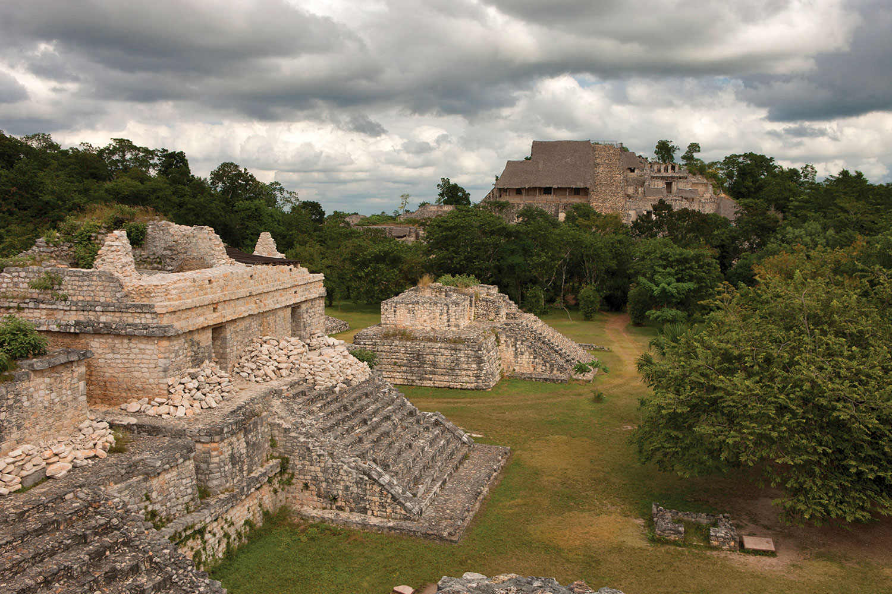

Ek' Balam
Temozon, Yucatán
Ek Balam (del maya yucateco: Éekꞌ Báalam ‘Estrella jaguar’)
es un sitio arqueológico maya en Yucatán, México.
Está localizado a 30 km al norte de la ciudad de Valladolid,
a 2 km del poblado maya actual de Ek Balam.
A juzgar por el tamaño y calidad de sus construcciones,
Ek Balam fue una entidad política de gran riqueza y prosperidad,
de aproximadamente 12 a 18 mil habitantes.
Costo por accesso: Si